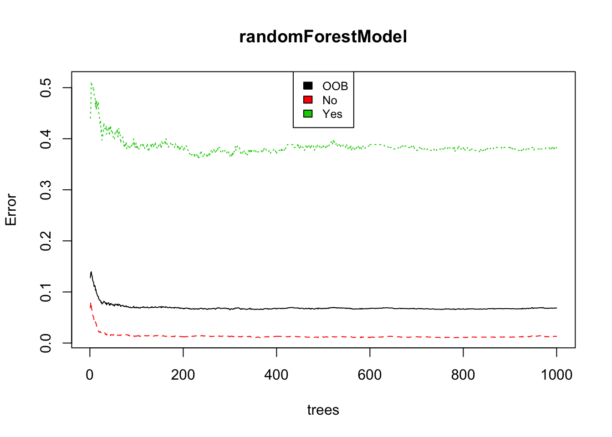

The churn.csv data contains information of several churn and non-churn customers.
Read churn.csv data.
churnData <- read.csv("/Users/Shima/R_projects/customer_churn/churn.csv", header = TRUE)
head(churnData)## customerID gender SeniorCitizen MaritalStatus Dependents tenure
## 1 0002-ORFBO Female 0 Yes Yes 9
## 2 0004-TLHLJ Male 0 No No 4
## 3 0013-MHZWF Female 0 No Yes 9
## 4 0013-SMEOE Female 1 Yes No 71
## 5 0015-UOCOJ Female 1 No No 7
## 6 0018-NYROU Female 0 Yes No 5
## PhoneService MultipleLines InternetService OnlineSecurity OnlineBackup
## 1 Yes No DSL No Yes
## 2 Yes No Fiber optic No No
## 3 Yes No DSL No No
## 4 Yes No Fiber optic Yes Yes
## 5 Yes No DSL Yes No
## 6 Yes No Fiber optic No No
## DeviceProtection TechSupport StreamingTV StreamingMovies Contract
## 1 No Yes Yes No One year
## 2 Yes No No No Month-to-month
## 3 No Yes Yes Yes Month-to-month
## 4 Yes Yes Yes Yes Two year
## 5 No No No No Month-to-month
## 6 No No No No Month-to-month
## PaperlessBilling PaymentMethod InternationalPlan
## 1 Yes Mailed check No
## 2 Yes Electronic check Yes
## 3 Yes Credit card (automatic) No
## 4 Yes Bank transfer (automatic) No
## 5 Yes Electronic check No
## 6 Yes Electronic check No
## VoiceMailPlan NumbervMailMessages TotalDayMinutes TotalDayCalls
## 1 No 0 168.8 137
## 2 No 0 122.2 112
## 3 Yes 36 178.7 134
## 4 No 0 190.2 68
## 5 No 0 67.7 68
## 6 No 0 174.3 95
## TotalEveMinutes TotalEveCalls TotalNightMinutes TotalNightCalls
## 1 241.4 107 204.8 106
## 2 131.7 94 169.5 106
## 3 178.6 102 126.8 82
## 4 262.2 64 130.0 92
## 5 195.7 86 236.5 137
## 6 186.6 128 258.2 105
## TotalIntlMinutes TotalIntlCalls CustomerServiceCalls TotalCall
## 1 15.5 4 0 354
## 2 10.3 9 5 326
## 3 8.0 4 2 324
## 4 8.8 4 0 228
## 5 12.0 2 1 294
## 6 12.9 5 3 336
## TotalRevenue Churn
## 1 593.3 No
## 2 280.9 Yes
## 3 571.5 No
## 4 7904.3 No
## 5 340.4 No
## 6 351.5 NoClean data before proceeding to create training/testing sets.
# check data: count number of null rows
sum(!complete.cases(churnData))## [1] 5# remove null rows
churnData <- churnData[complete.cases(churnData), ]
# need to reduce categories before we are able to create a model
# multiple versions of No category: No Internet Service, No Phone Service, binary 0, etc. -> must be consistently No instead
# replace No Internet Service category in internet related columns with No - columns 9-15 are internet related
for(i in 9:15) {
churnData[churnData[,i]=="No internet service", i] <- "No"
churnData[,i] <- as.factor(churnData[,i])
}
# replace No Internet Service category in MultipleLines with No
churnData[churnData$MultipleLines=="No phone service", "MultipleLines"] <- "No"
churnData$MultipleLines <- as.factor(churnData$MultipleLines)
# replace binary categories in SeniorCitizen column with Yes or No
churnData[churnData$SeniorCitizen=="0", "SeniorCitizen"] <- "No"
churnData[churnData$SeniorCitizen=="1", "SeniorCitizen"] <- "Yes"
churnData$SeniorCitizen <- as.factor(churnData$SeniorCitizen)
head(churnData)## customerID gender SeniorCitizen MaritalStatus Dependents tenure
## 1 0002-ORFBO Female No Yes Yes 9
## 2 0004-TLHLJ Male No No No 4
## 3 0013-MHZWF Female No No Yes 9
## 4 0013-SMEOE Female Yes Yes No 71
## 5 0015-UOCOJ Female Yes No No 7
## 6 0018-NYROU Female No Yes No 5
## PhoneService MultipleLines InternetService OnlineSecurity OnlineBackup
## 1 Yes No DSL No Yes
## 2 Yes No Fiber optic No No
## 3 Yes No DSL No No
## 4 Yes No Fiber optic Yes Yes
## 5 Yes No DSL Yes No
## 6 Yes No Fiber optic No No
## DeviceProtection TechSupport StreamingTV StreamingMovies Contract
## 1 No Yes Yes No One year
## 2 Yes No No No Month-to-month
## 3 No Yes Yes Yes Month-to-month
## 4 Yes Yes Yes Yes Two year
## 5 No No No No Month-to-month
## 6 No No No No Month-to-month
## PaperlessBilling PaymentMethod InternationalPlan
## 1 Yes Mailed check No
## 2 Yes Electronic check Yes
## 3 Yes Credit card (automatic) No
## 4 Yes Bank transfer (automatic) No
## 5 Yes Electronic check No
## 6 Yes Electronic check No
## VoiceMailPlan NumbervMailMessages TotalDayMinutes TotalDayCalls
## 1 No 0 168.8 137
## 2 No 0 122.2 112
## 3 Yes 36 178.7 134
## 4 No 0 190.2 68
## 5 No 0 67.7 68
## 6 No 0 174.3 95
## TotalEveMinutes TotalEveCalls TotalNightMinutes TotalNightCalls
## 1 241.4 107 204.8 106
## 2 131.7 94 169.5 106
## 3 178.6 102 126.8 82
## 4 262.2 64 130.0 92
## 5 195.7 86 236.5 137
## 6 186.6 128 258.2 105
## TotalIntlMinutes TotalIntlCalls CustomerServiceCalls TotalCall
## 1 15.5 4 0 354
## 2 10.3 9 5 326
## 3 8.0 4 2 324
## 4 8.8 4 0 228
## 5 12.0 2 1 294
## 6 12.9 5 3 336
## TotalRevenue Churn
## 1 593.3 No
## 2 280.9 Yes
## 3 571.5 No
## 4 7904.3 No
## 5 340.4 No
## 6 351.5 No# group tenures to decrease number of categories
min(churnData$tenure)## [1] 1max(churnData$tenure)## [1] 72churnData$tenureGroup <- NA
numRows <- dim(churnData)[1]
for(i in 1:numRows) {
tenure <- churnData$tenure[i]
if (tenure >= 0 & tenure <= 12){
churnData$tenureGroup[i] <- "0-12 Month"
}else if(tenure > 12 & tenure <= 24){
churnData$tenureGroup[i] <- "12-24 Month"
}else if (tenure > 24 & tenure <= 48){
churnData$tenureGroup[i] <- "24-48 Month"
}else if (tenure > 48 & tenure <=60){
churnData$tenureGroup[i] <- "48-60 Month"
}else if (tenure > 60){
churnData$tenureGroup[i] <- "> 60 Month"
}
}
churnData$tenureGroup <- as.factor(churnData$tenureGroup)Randomly select 35% of the data and use that as the test set.
# create testing / training datasets
num_samples = dim(churnData)[1]
sampling.rate = 0.35
testing <-sample(1:num_samples,sampling.rate*num_samples,replace = TRUE)
testingset <- subset(churnData[testing,])
training <- setdiff(1:num_samples,testing)
trainingset <- subset(churnData[training,])Create a random forest model to predict customer churn and use this model on the test set.
library("randomForest")## randomForest 4.6-14## Type rfNews() to see new features/changes/bug fixes.randomForestModel <- randomForest(Churn ~. -tenure -customerID, data=trainingset, ntree=1000)
plot(randomForestModel)
legend("top", colnames(randomForestModel$err.rate), col=1:3, cex=0.8,fill=1:3)
# predict on testing set
prdictions <- predict(randomForestModel, testingset)
predictionResults <- data.frame(Churn = prdictions)
head(predictionResults)## Churn
## 1622 No
## 2682 No
## 1730 No
## 1801 No
## 1524 No
## 1546 NoEvaluate the accuracy of the random forest model over the test set.
# test is the one we predict
wrongPredictions = sum(predictionResults$Churn != trainingset$Churn) ## Warning in `!=.default`(predictionResults$Churn, trainingset$Churn): longer
## object length is not a multiple of shorter object length## Warning in is.na(e1) | is.na(e2): longer object length is not a multiple of
## shorter object length# claculate misclassification rate
sizeOfTestSet = dim(trainingset)[1]
misclassification = wrongPredictions / sizeOfTestSet
print(paste("Missclassification Rate: ", round(misclassification*100,2), "%"))## [1] "Missclassification Rate: 22.05 %"Confusion Matrix Setup:
library("crossval")
cm = confusionMatrix(testingset$Churn, predictionResults$Churn, negative="No")
cm## FP TP TN FN
## 8 93 1008 55
## attr(,"negative")
## [1] "No"For the test set:
How many predictions were yes?
print(paste("Number of Yes predictions:",sum(predictionResults$Churn == "Yes")))## [1] "Number of Yes predictions: 101"print(paste("Number of true positives:",cm[2]))## [1] "Number of true positives: 93"How many predictions were yes but wrong?
print(paste("Number of false positives:",cm[1]))## [1] "Number of false positives: 8"How many predictions were no?
print(paste("Number of No predictions:",sum(predictionResults$Churn == "No")))## [1] "Number of No predictions: 1063"print(paste("Number of true negatives:",cm[3]))## [1] "Number of true negatives: 1008"How many predictions were no but wrong?
print(paste("Number of false negatives:",cm[4]))## [1] "Number of false negatives: 55"